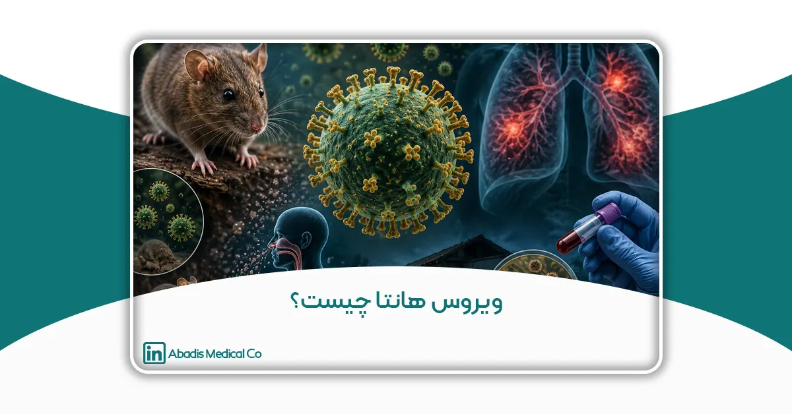

بررسی جامع هانتاویروس، راههای انتقال، علائم، تشخیص، درمان و روشهای پیشگیری
چکیده
هانتاویروسها (Hantaviruses) گروهی از ویروسهای RNA دار و پوششدار متعلق به خانواده Hantaviridae هستند که عمدتاً از طریق جوندگان به انسان منتقل میشوند و بهعنوان یکی از مهمترین عوامل بیماریهای مشترک بین انسان و حیوان (Zoonotic Diseases) شناخته میشوند. این ویروسها قادرند دو سندرم بالینی اصلی شامل «تب خونریزیدهنده همراه با سندرم کلیوی» (Hemorrhagic Fever with Renal Syndrome – HFRS) و «سندرم ریوی هانتاویروس» (Hantavirus Pulmonary Syndrome – HPS) را ایجاد کنند که هر دو با نرخ مرگومیر قابلتوجه همراه هستند. انتقال بیماری اغلب از طریق استنشاق ذرات معلق آلوده به ادرار، بزاق یا مدفوع جوندگان صورت میگیرد و در برخی گونهها احتمال انتقال محدود انسان به انسان نیز گزارش شده است.
در دهههای اخیر، تغییرات اقلیمی، گسترش شهرنشینی، تخریب زیستگاههای طبیعی و افزایش تماس انسان با جوندگان، موجب افزایش نگرانی جهانی درباره گسترش هانتاویروس شده است. بر اساس گزارشهای سازمان جهانی بهداشت (WHO) و مرکز کنترل بیماریهای آمریکا (CDC)، شیوع این بیماری در مناطق مختلف آسیا، اروپا و قاره آمریکا مشاهده شده و برخی گونههای ویروس میتوانند موجب نارسایی شدید ریوی، شوک، خونریزی داخلی و نارسایی کلیوی شوند.
این مقاله با رویکردی علمی و مروری، به بررسی جامع تاریخچه کشف هانتاویروس، ساختار ویروس، مخازن طبیعی، اپیدمیولوژی جهانی، راههای انتقال، علائم بالینی، پاتوفیزیولوژی، روشهای تشخیص آزمایشگاهی، درمان و راهکارهای پیشگیری میپردازد. همچنین اهمیت کنترل عفونت در مراکز درمانی، مدیریت پسماندهای عفونی، و استفاده از تجهیزات پزشکی ایمن برای جلوگیری از انتشار آلودگی مورد بررسی قرار گرفته است.
نتایج مطالعات نشان میدهد که در حال حاضر درمان ضدویروسی اختصاصی قطعی برای هانتاویروس وجود ندارد و مؤثرترین راهکار مقابله با بیماری، پیشگیری از تماس با منابع آلوده، کنترل جمعیت جوندگان، رعایت اصول بهداشت محیط و تقویت سیستمهای کنترل عفونت در بیمارستانها است. در این راستا، بهرهگیری از فناوریهای نوین پزشکی مانند سیستمهای بسته ساکشن و تجهیزات یکبارمصرف میتواند نقش مهمی در کاهش انتقال عوامل بیماریزا و حفاظت از کادر درمان و بیماران ایفا کند.
با توجه به روند روبهرشد بیماریهای ویروسی نوپدید در جهان، شناخت علمی هانتاویروس و توسعه زیرساختهای بهداشتی و کنترلی، از ارکان مهم حفظ سلامت عمومی و ارتقای ایمنی زیستی در نظام سلامت به شمار می رود.
واژگان کلیدی: هانتاویروس، بیماریهای زئونوز، سندرم ریوی هانتاویروس، تب خونریزیدهنده، جوندگان، کنترل عفونت
مقدمه
در دهههای اخیر، بیماریهای عفونی نوپدید و بازپدید (Emerging and Re-emerging Infectious Diseases) به یکی از مهمترین تهدیدهای سلامت عمومی در جهان تبدیل شدهاند. گسترش شهرنشینی، تغییرات اقلیمی، افزایش تخریب زیستگاههای طبیعی، مهاجرت حیوانات وحشی و افزایش تعامل انسان با حیوانات ناقل بیماری، شرایطی را فراهم کرده است که انتقال عوامل بیماریزا از حیوان به انسان بیش از گذشته رخ دهد. در این میان، بیماریهای مشترک بین انسان و حیوان (Zoonotic Diseases) سهم قابلتوجهی در بروز اپیدمیها و بحرانهای جهانی سلامت داشتهاند. ویروسهایی مانند SARS، MERS، Ebola، COVID-19 و Hantavirus نمونههایی از عوامل بیماریزای زئونوز هستند که توانستهاند در مقاطع مختلف، نظامهای سلامت جهان را با چالشهای جدی مواجه کنند.
هانتاویروسها (Hantaviruses) گروهی از ویروسهای RNA دار متعلق به خانواده Hantaviridae هستند که عمدتاً در بدن جوندگان وحشی زندگی میکنند و از طریق تماس انسان با ترشحات حیوانات آلوده منتقل میشوند. این ویروسها بهعنوان یکی از مهمترین عوامل بیماریزای ویروسی مشترک بین انسان و حیوان شناخته میشوند و میتوانند منجر به بروز بیماریهای شدید و گاه مرگبار شوند. مهمترین تظاهرات بالینی ناشی از این ویروس شامل «تب خونریزیدهنده همراه با سندرم کلیوی» (Hemorrhagic Fever with Renal Syndrome – HFRS) و «سندرم ریوی هانتاویروس» (Hantavirus Pulmonary Syndrome – HPS) است که هر دو با نرخ مرگومیر قابلتوجه همراه هستند.
نخستین موارد شناختهشده بیماری هانتاویروس در جریان جنگ کره (1950–1953) مشاهده شد؛ زمانی که هزاران سرباز به بیماری ناشناختهای مبتلا شدند که با تب شدید، خونریزی و نارسایی کلیوی همراه بود. بعدها در سال 1976، ویروس عامل بیماری توسط دانشمند کرهای Ho-Wang Lee از نوعی موش صحرایی در نزدیکی رودخانه Hantan در کره جنوبی جدا شد و نام «هانتاویروس» برای آن انتخاب گردید. از آن زمان تاکنون، گونههای متعددی از این ویروس در آسیا، اروپا و قاره آمریکا شناسایی شدهاند و موارد ابتلا در کشورهای مختلف جهان گزارش شده است.
اهمیت هانتاویروس تنها به شدت بیماری محدود نمیشود؛ بلکه ویژگیهای اپیدمیولوژیک و مسیر انتقال آن نیز موجب نگرانیهای گسترده در حوزه سلامت عمومی شده است. انتقال ویروس عمدتاً از طریق استنشاق ذرات آلوده معلق در هوا صورت میگیرد؛ ذراتی که از ادرار، بزاق یا مدفوع جوندگان آلوده ایجاد میشوند. به همین دلیل، محیطهای بسته، انبارها، مراکز نگهداری مواد غذایی، سولهها، مراکز دفع زباله و حتی برخی محیطهای بیمارستانی میتوانند در صورت آلودگی به جوندگان، به کانون انتقال بیماری تبدیل شوند.
مطالعات انجامشده توسط سازمان جهانی بهداشت (WHO) و مرکز کنترل و پیشگیری بیماریهای آمریکا (CDC) نشان دادهاند که برخی گونههای هانتاویروس، بهویژه گونههای عامل سندرم ریوی، میتوانند باعث نارسایی حاد تنفسی، شوک و مرگ سریع بیماران شوند. نرخ مرگومیر در سندرم ریوی هانتاویروس در برخی مطالعات بین 30 تا 40 درصد گزارش شده است. از سوی دیگر، نبود درمان ضدویروسی اختصاصی قطعی، دشواری تشخیص زودهنگام و شباهت علائم اولیه بیماری با سایر عفونتهای ویروسی، اهمیت پیشگیری و کنترل بیماری را دوچندان کرده است.
در سالهای اخیر، افزایش تغییرات اقلیمی و گرمتر شدن زمین نیز بر الگوی پراکندگی جوندگان و شیوع بیماریهای مرتبط با آنها تأثیر گذاشته است. افزایش بارندگی، تغییر پوشش گیاهی و جابهجایی اکوسیستمها میتواند جمعیت جوندگان ناقل را افزایش دهد و احتمال تماس انسان با مخازن طبیعی ویروس را بیشتر کند. به همین دلیل، هانتاویروس امروزه نهتنها یک بیماری عفونی، بلکه یک چالش زیستمحیطی و بهداشت جهانی محسوب میشود.
در کنار نگرانیهای اپیدمیولوژیک، مدیریت بیماران مبتلا به هانتاویروس در مراکز درمانی نیز از اهمیت بالایی برخوردار است. بسیاری از بیماران در مراحل شدید بیماری نیازمند بستری در بخش مراقبتهای ویژه (ICU)، اکسیژنتراپی، تهویه مکانیکی و استفاده از سیستمهای ساکشن برای تخلیه ترشحات تنفسی هستند. این موضوع میتواند خطر انتشار عوامل بیماریزا در محیط بیمارستان را افزایش دهد و کادر درمان را در معرض تماس با ترشحات آلوده قرار دهد. از این رو، رعایت اصول کنترل عفونت، استفاده از تجهیزات حفاظت فردی (PPE)، سیستمهای ساکشن بسته و تجهیزات یکبارمصرف، نقش مهمی در کاهش انتقال عوامل بیماریزا در محیطهای درمانی ایفا میکند.
با توجه به اهمیت روزافزون بیماریهای نوپدید، شناخت دقیق هانتاویروس، راههای انتقال، علائم بالینی، روشهای تشخیص، درمان و پیشگیری از آن، برای متخصصان حوزه سلامت، مراکز درمانی و پژوهشگران ضروری است. این مقاله با رویکردی علمی و جامع، به بررسی کامل ویروس هانتا، اپیدمیولوژی جهانی، ویژگیهای ویروسشناسی، مکانیسم بیماریزایی، روشهای کنترل عفونت و راهکارهای پیشگیری میپردازد و تلاش میکند نقش فناوریها و تجهیزات نوین پزشکی را در کاهش خطر انتقال بیماری مورد تحلیل قرار دهد.
تاریخچه کشف هانتاویروس
تاریخچه شناسایی هانتاویروس (Hantavirus) به یکی از مهمترین رخدادهای پزشکی و اپیدمیولوژیک قرن بیستم بازمیگردد. اگرچه امروزه این ویروس بهعنوان یکی از عوامل مهم بیماریهای مشترک بین انسان و حیوان (Zoonotic Diseases) شناخته میشود، اما تا چند دهه پیش علت اصلی بیماریهای مرتبط با آن ناشناخته بود و تنها بهعنوان نوعی تب مرموز همراه با خونریزی و نارسایی کلیوی شناخته میشد.
نخستین گزارشها؛ جنگ کره (1950–1953)
اولین همهگیری شناختهشده مرتبط با هانتاویروس در جریان جنگ کره رخ داد. در فاصله سالهای 1950 تا 1953، بیش از 3000 سرباز سازمان ملل، بهویژه نیروهای آمریکایی و کرهای، به بیماری شدیدی مبتلا شدند که علائمی مانند:
• تب بالا،
• درد شدید عضلانی،
• خونریزی،
• افت فشار خون،
• و نارسایی حاد کلیه
این بیماری در آن زمان با نام:Korean Hemorrhagic Fever(تب خونریزیدهنده کرهای)
شناخته میشد.
میزان مرگومیر بیماری در برخی مناطق قابلتوجه بود و بهدلیل ناشناخته بودن عامل بیماری، نگرانی زیادی در میان پزشکان نظامی و سازمانهای بهداشتی ایجاد کرد. بررسیهای اولیه نشان میداد که بیماری بیشتر در مناطق روستایی و سنگرهایی که آلودگی جوندگان در آنها زیاد بود مشاهده میشود، اما هنوز ارتباط مستقیم با ویروس مشخص نشده بود.
کشف عامل بیماری
پس از حدود دو دهه تحقیق، در سال 1976 دانشمند ویروسشناس کرهای:Dr. Ho-Wang Leeموفق شد عامل بیماری را شناسایی کند. او ویروس را از ریه نوعی موش صحرایی مزرعهای جدا کرد.این کشف در نزدیکی رودخانه:Hantan Riverدر کره جنوبی انجام شد و به همین دلیل ویروس جدید «هانتاویروس» نام گرفت.
کشف Ho-Wang Lee نقطه عطف مهمی در علم ویروسشناسی محسوب میشود، زیرا برای نخستینبار مشخص شد که:
• جوندگان میتوانند مخزن طبیعی ویروسهای خطرناک انسانی باشند،
• انتقال بیماری از طریق ترشحات حیوانات صورت میگیرد،
• و بیماریهای شدید ویروسی ممکن است منشأ محیطی و حیوانی داشته باشند.
نتایج این کشف در مجله معتبر:Journal of Infectious Diseasesمنتشر شد و بهسرعت توجه جهانی را جلب کرد.
گسترش تحقیقات جهانی در دهه 1980
پس از شناسایی اولیه، تحقیقات گستردهای در کشورهای مختلف آغاز شد. پژوهشگران دریافتند که خانواده هانتاویروسها بسیار گستردهتر از تصور اولیه هستند و انواع مختلفی از آنها در نقاط مختلف جهان وجود دارد.
در دهه 1980 گونههای متعددی از هانتاویروس در:
• چین،
• روسیه،
• فنلاند،
• سوئد،
• آلمان، و کشورهای حوزه بالکان شناسایی شدند.
مطالعات نشان داد که:
• هر گونه هانتاویروس معمولاً با یک گونه خاص جونده مرتبط است،
• جوندگان بدون بیمار شدن، ویروس را در بدن خود حمل میکنند،
• و انسانها میزبان تصادفی ویروس هستند.
کشف سندرم ریوی هانتاویروس در آمریکا (1993)
یکی از مهمترین نقاط عطف در تاریخ هانتاویروس در سال 1993 رخ داد؛ زمانی که در منطقه:Four Cornersدر جنوب غربی ایالات متحده آمریکا، تعدادی از افراد جوان و سالم بهطور ناگهانی دچار بیماری تنفسی شدید شدند.
بیماران علائمی مانند:
• تب،
• درد عضلانی،
• تنگی نفس شدید،
• و نارسایی حاد ریوی داشتند و بسیاری از آنها ظرف مدت کوتاهی جان خود را از دست دادند.پس از تحقیقات گسترده توسط: Centers for Disease Control and Prevention (CDC)نوع جدیدی از هانتاویروس شناسایی شد که:Sin Nombre Virusنام گرفت.
این ویروس عامل بیماری جدیدی به نام:Hantavirus Pulmonary Syndrome (HPS)یا سندرم ریوی هانتاویروس شناخته شد.کشف این سندرم اهمیت جهانی هانتاویروس را چند برابر کرد، زیرا مشخص شد برخی گونههای ویروس علاوه بر کلیه، میتوانند باعث نارسایی شدید تنفسی نیز شوند.
پیشرفتهای علمی در قرن 21
در دهههای اخیر، پیشرفت فناوریهای ژنتیکی و مولکولی باعث شناسایی گونههای بیشتری از هانتاویروس شده است. امروزه دهها گونه مختلف هانتاویروس در جهان شناخته شدهاند که برخی بیماریزا و برخی غیر بیماریزا هستند.
مطالعات ژنتیکی نشان دادهاند که:
• هانتاویروسها دارای تنوع ژنتیکی بالایی هستند،
• تغییرات اقلیمی میتواند بر پراکندگی جوندگان ناقل تأثیر بگذارد،
• و افزایش تماس انسان با زیستگاههای طبیعی احتمال شیوع بیماری را بیشتر میکند.
اهمیت تاریخی کشف هانتاویروس
کشف هانتاویروس نقش مهمی در توسعه علم بیماریهای نوپدید داشت و موجب شد توجه جهانی به بیماریهای زئونوز افزایش یابد.
این کشف نشان داد که:
• بیماریهای خطرناک میتوانند منشأ حیوانی داشته باشند،
• کنترل جمعیت جوندگان اهمیت حیاتی دارد،
• و رعایت اصول بهداشت محیط و کنترل عفونت نقش مهمی در پیشگیری از بیماریهای ویروسی ایفا میکند.
تجربه هانتاویروس بعدها در مدیریت بیماریهایی مانند:
• SARS،
• MERS،
• Ebola،
• و COVID-19 نیز مورد توجه قرار گرفت و اهمیت آمادگی نظام سلامت در برابر ویروسهای نوظهور را برجستهتر کرد.
طبقهبندی ویروس هانتا (Hantavirus Classification)
هانتاویروسها (Hantaviruses) گروهی از ویروسهای RNA دار و پوششدار هستند که در خانواده Hantaviridae و راسته Bunyavirales طبقهبندی میشوند. این ویروسها از مهمترین عوامل بیماریهای مشترک بین انسان و حیوان (Zoonotic Diseases) به شمار میروند و عمدتاً توسط جوندگان به انسان منتقل میشوند. بر اساس طبقهبندی کمیته بینالمللی ویروسشناسی (ICTV)، هانتاویروسها در قلمرو Riboviria، شاخه Negarnaviricota، رده Ellioviricetes و راسته Bunyavirales قرار دارند و بیشتر گونههای بیماریزای انسانی آنها در جنس Orthohantavirus طبقهبندی میشوند.
هانتاویروسها دارای ژنوم RNA تکرشتهای با قطبیت منفی (Negative-sense single-stranded RNA) هستند. ژنوم این ویروس از سه قطعه مجزا شامل S ،M و L تشکیل شده است. قطعه S مسئول تولید پروتئین نوکلئوکپسید، قطعه M کدکننده گلیکوپروتئینهای سطحی ویروس (Gn و Gc) و قطعه L مسئول تولید آنزیم RNA-dependent RNA polymerase است که در همانندسازی ویروس نقش اساسی دارد. وجود ژنوم سهبخشی در هانتاویروسها موجب تنوع ژنتیکی بالا و قابلیت سازگاری آنها با میزبانهای مختلف شده است.
از نظر اپیدمیولوژیک و بالینی، هانتاویروسها به دو گروه اصلی تقسیم میشوند: هانتاویروسهای دنیای قدیم (Old World Hantaviruses) و هانتاویروسهای دنیای جدید (New World Hantaviruses). گونههای دنیای قدیم عمدتاً در آسیا و اروپا یافت میشوند و بیشتر باعث بروز تب خونریزیدهنده همراه با سندرم کلیوی (Hemorrhagic Fever with Renal Syndrome – HFRS) میشوند. مهمترین اعضای این گروه شامل Hantaan virus، Seoul virus، Puumala virus و Dobrava virus هستند.
در مقابل، هانتاویروسهای دنیای جدید عمدتاً در آمریکای شمالی و جنوبی شیوع دارند و عامل اصلی سندرم ریوی هانتاویروس (Hantavirus Pulmonary Syndrome – HPS) یا HCPS محسوب میشوند. از مهمترین گونههای این گروه میتوان به Sin Nombre virus و Andes virus اشاره کرد که بهدلیل ایجاد نارسایی حاد ریوی و مرگومیر بالا اهمیت ویژهای دارند.
هر گونه از هانتاویروسها معمولاً با یک میزبان حیوانی اختصاصی، بهویژه جوندگان، مرتبط است. ویروس بدون ایجاد بیماری شدید در بدن حیوان باقی میماند و از طریق ادرار، بزاق و مدفوع به محیط دفع میشود. انسان بهعنوان میزبان اتفاقی، اغلب از طریق استنشاق ذرات آلوده موجود در هوا مبتلا میشود.
مطالعات ژنتیکی نشان دادهاند که هانتاویروسها دارای تنوع ژنتیکی بالایی هستند و بهطور مداوم در حال تکامل و سازگاری با میزبانهای جدید میباشند. این موضوع اهمیت طبقهبندی دقیق و پایش مولکولی ویروس را در کنترل اپیدمیها، تشخیص آزمایشگاهی، طراحی واکسن و توسعه روشهای درمانی دوچندان می کند.
ناقلان ویروس
مهمترین ناقلان:
• موش صحرایی
• موش خانگی
• Deer Mouse
• موش جنگلی
این حیوانات بدون بروز علائم بیماری، ویروس را از طریق:
• ادرار
• مدفوع
• بزاق به محیط دفع میکنند.
راههای انتقال به انسان
1. استنشاق ذرات آلوده
مهمترین راه انتقال، تنفس ذرات آلوده معلق در هوا است.
این حالت در:
• انبارها
• محیطهای بسته
• سولهها
• خانههای متروکه
• مراکز آلوده به جوندگان رخ میدهد.
2. تماس مستقیم
تماس دست با سطوح آلوده و سپس لمس چشم، بینی یا دهان.
3. گزش جوندگان
در موارد نادر، گزش موش آلوده نیز میتواند عامل انتقال باشد.
4. انتقال انسان به انسان
اغلب گونههای هانتاویروس قابلیت انتقال انسانی ندارند؛ اما گونه Andes Virus در آمریکای جنوبی موارد محدودی از انتقال بین انسانها را نشان داده است.
اپیدمیولوژی جهانی
هانتاویروس در بسیاری از کشورهای جهان گزارش شده است.
آسیا
بیشترین موارد HFRS در:
• چین
• کره جنوبی
• روسیه گزارش میشود.
اروپا
گونههای:
• Puumala
• Dobrava
در کشورهای شمال و شرق اروپا شایع هستند.
آمریکا
سندرم ریوی هانتاویروس بیشتر در:
• آمریکا
• آرژانتین
• شیلی
• برزیل گزارش میشود.
علائم بالینی
دوره نهفتگی بیماری معمولاً 1 تا 8 هفته است.
علائم اولیه:
• تب
• لرز
• درد عضلانی
• ضعف
• سردرد
• تهوع
• استفراغ
علائم پیشرفته
سندرم ریوی هانتاویروس (HPS)
• تنگی نفس شدید
• ادم ریوی
• افت اکسیژن
• نارسایی تنفسی
تب خونریزیدهنده همراه با سندرم کلیوی (HFRS)
• افت فشار خون
• خونریزی
• کاهش ادرار
• نارسایی کلیوی
پاتوفیزیولوژی بیماری
هانتاویروسها عمدتاً سلولهای اندوتلیال عروق خونی را هدف قرار میدهند. آسیب به این سلولها موجب: • افزایش نفوذپذیری عروقی • نشت مایع • افت فشار خون • ادم ریوی
تشخیص آزمایشگاهی
تشخیص آزمایشگاهی هانتاویروس بهدلیل شباهت علائم بالینی آن با بسیاری از بیماریهای ویروسی و تنفسی، اهمیت بسیار زیادی در مدیریت بیماران و کنترل اپیدمی دارد. از آنجا که علائم اولیه بیماری شامل تب، سردرد، درد عضلانی و علائم تنفسی غیراختصاصی است، تشخیص قطعی تنها بر اساس یافتههای بالینی امکانپذیر نیست و نیاز به آزمایشهای تخصصی دارد.
روشهای تشخیص هانتاویروس به دو دسته اصلی تقسیم میشوند: روشهای سرولوژیک و روشهای مولکولی.
۱. آزمایشهای سرولوژیک
رایجترین روش تشخیص هانتاویروس، بررسی آنتیبادیهای اختصاصی علیه ویروس در خون بیمار است. در این روش معمولاً آنتیبادیهای IgM و IgG مورد ارزیابی قرار میگیرند.
وجود آنتیبادی IgM نشاندهنده عفونت حاد و اخیر است، در حالیکه افزایش سطح IgG معمولاً بیانگر تماس قبلی یا مرحله پیشرفتهتر بیماری میباشد. مهمترین روش سرولوژیک مورد استفاده، آزمایش ELISA (Enzyme-Linked Immunosorbent Assay) است که حساسیت و دقت بالایی دارد.
در بسیاری از بیماران، آنتیبادیهای اختصاصی طی چند روز ابتدایی شروع علائم قابل شناسایی هستند و به همین دلیل ELISA یکی از مهمترین ابزارهای تشخیص بالینی هانتاویروس محسوب میشود.
۲. روشهای مولکولی
روش RT-PCR (Reverse Transcription Polymerase Chain Reaction) دقیقترین روش تشخیص مستقیم هانتاویروس به شمار میرود. در این تکنیک، RNA ویروس از نمونه خون، ترشحات تنفسی یا بافت استخراج شده و سپس تکثیر میشود.
این روش بهویژه در مراحل اولیه بیماری که هنوز پاسخ ایمنی کامل ایجاد نشده، اهمیت زیادی دارد. RT-PCR علاوه بر تشخیص عفونت، امکان تعیین گونه ویروس و بررسیهای اپیدمیولوژیک را نیز فراهم میکند.
روش Real-Time PCR نیز بهعنوان نسخه پیشرفتهتر PCR، برای اندازهگیری بار ویروسی و تشخیص سریعتر در آزمایشگاههای مرجع مورد استفاده قرار میگیرد.
۳. کشت ویروس
کشت هانتاویروس در محیط آزمایشگاهی امکانپذیر است، اما بهدلیل خطر زیستی بالا، تنها در آزمایشگاههای دارای سطح ایمنی زیستی BSL-3 یا BSL-4 انجام میشود. این روش بیشتر در تحقیقات تخصصی کاربرد دارد و در تشخیص روتین استفاده نمیشود.
۴. یافتههای آزمایشگاهی غیر اختصاصی
در کنار آزمایشهای اختصاصی، برخی یافتههای آزمایشگاهی میتوانند به تشخیص بیماری کمک کنند، از جمله:
• کاهش پلاکت خون (Thrombocytopenia)
• افزایش هماتوکریت
• افزایش آنزیمهای کبدی
• اختلال عملکرد کلیه
• پروتئینوری و هماچوری
• افزایش لاکتات دهیدروژناز (LDH)
در بیماران مبتلا به سندرم ریوی هانتاویروس (HPS)، معمولاً هیپوکسمی شدید و ارتشاح دوطرفه ریه در تصویربرداری مشاهده میشود.
۵. نمونههای مورد استفاده
برای تشخیص هانتاویروس معمولاً از نمونههای زیر استفاده میشود:
• خون کامل
• سرم
• پلاسما
• ترشحات تنفسی
• نمونه بافتی در موارد شدید یا پس از مرگ
جمعآوری و انتقال نمونهها باید تحت شرایط ایمنی زیستی مناسب انجام شود، زیرا ویروس قابلیت انتقال از طریق ذرات آئروسل را دارد.
۶. اهمیت تشخیص سریع
تشخیص زودهنگام هانتاویروس نقش مهمی در کاهش مرگومیر دارد. شناسایی سریع بیماران موجب:
• شروع مراقبت حمایتی مناسب،
• کنترل عفونت،
• جلوگیری از انتقال در محیطهای درمانی،
• و مدیریت اپیدمیولوژیک بیماری میشود.
به همین دلیل، در بیماران دارای سابقه تماس با جوندگان یا حضور در مناطق آلوده، باید هانتاویروس بهعنوان یکی از تشخیصهای افتراقی مهم مدنظر قرار گیرد.
درمان
در حال حاضر درمان ضدویروسی اختصاصی قطعی وجود ندارد.درمان حمایتی شامل:
• بستری در ICU
• اکسیژنتراپی
• ونتیلاتور
• کنترل مایعات
• دیالیز
• پایش همودینامیک
است.
برخی مطالعات استفاده از Ribavirin را در مراحل اولیه HFRS مؤثر دانستهاند.
نتیجهگیری
هانتاویروسها از مهمترین ویروسهای نوپدید مشترک بین انسان و حیوان هستند که بهدلیل قدرت بیماریزایی بالا، قابلیت ایجاد سندرمهای شدید تنفسی و کلیوی، و ارتباط مستقیم با جوندگان آلوده، به یکی از چالشهای مهم بهداشت عمومی در جهان تبدیل شدهاند. بررسیهای علمی نشان میدهد که افزایش تماس انسان با زیستگاه جوندگان، تغییرات اقلیمی، توسعه شهرنشینی و ضعف در مدیریت بهداشت محیط، نقش مهمی در افزایش خطر شیوع این ویروس دارند.
این ویروس عمدتاً از طریق استنشاق ذرات آلوده حاصل از ادرار، بزاق و مدفوع جوندگان منتقل میشود و در برخی موارد میتواند منجر به نارسایی حاد ریوی، شوک و مرگ گردد. نبود درمان اختصاصی قطعی و محدودیت واکسنهای مؤثر، اهمیت پیشگیری، کنترل عفونت و رعایت اصول بهداشت محیط را دوچندان میکند.
شناخت دقیق ساختار ویروس، طبقهبندی، راههای انتقال، علائم بالینی و روشهای تشخیص آزمایشگاهی، نقش اساسی در مدیریت بیماری و کاهش مرگومیر دارد. همچنین استفاده از تجهیزات پزشکی ایمن، سیستمهای کنترل عفونت، تهویه مناسب محیطهای درمانی و فناوریهای نوین در مدیریت ترشحات و پسماندهای عفونی، میتواند خطر انتقال عوامل بیماریزا را به میزان قابل توجهی کاهش دهد.
در این میان، توسعه فناوریهای پزشکی نوین و استفاده از تجهیزات یکبارمصرف ایمن، بهویژه در بخش کنترل عفونت بیمارستانی، میتواند بهعنوان بخشی از راهبردهای مقابله با بیماریهای ویروسی نوظهور از جمله هانتاویروس مورد توجه قرار گیرد. توجه به آموزش عمومی، پایش اپیدمیولوژیک، تقویت زیرساختهای بهداشتی و حمایت از تحقیقات علمی نیز از مهمترین اقدامات برای کنترل و پیشگیری از این بیماری در آینده خواهد بود.
منابع
1. World Health Organization (WHO). (2022). Global report on zoonotic diseases. Geneva: WHO Press.
2. Centers for Disease Control and Prevention (CDC). (2024). Hantavirus Disease Information. Atlanta, USA.
3. Jonsson, C. B., Figueiredo, L. T., & Vapalahti, O. (2010). A global perspective on hantavirus ecology, epidemiology, and disease. Clinical Microbiology Reviews, 23(2), 412–441.
4. Lee, H. W., Lee, P. W., & Johnson, K. M. (1978). Isolation of the etiologic agent of Korean hemorrhagic fever. Journal of Infectious Diseases, 137(3), 298–308.
5. MacNeil, A., Nichol, S. T., & Spiropoulou, C. F. (2011). Hantavirus pulmonary syndrome. Virus Research, 162(1–2), 138–147.
6. Vaheri, A., et al. (2013). Hantavirus infections in Europe and their impact on public health. Reviews in Medical Virology, 23(1), 35–49.
7. CDC. (2023). Hantavirus Pulmonary Syndrome (HPS). Centers for Disease Control and Prevention.
8. Kruger, D. H., Figueiredo, L. T., Song, J. W., & Klempa, B. (2015). Hantaviruses—Globally emerging pathogens. Journal of Clinical Virology, 64, 128–136.